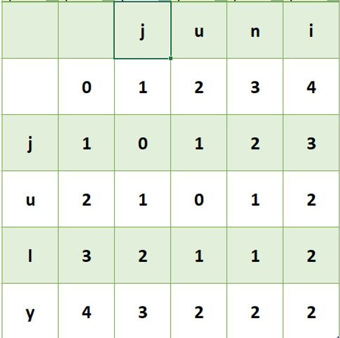
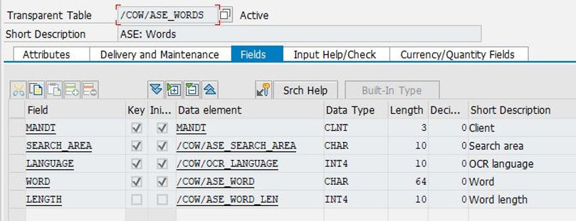
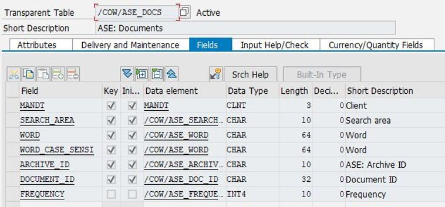
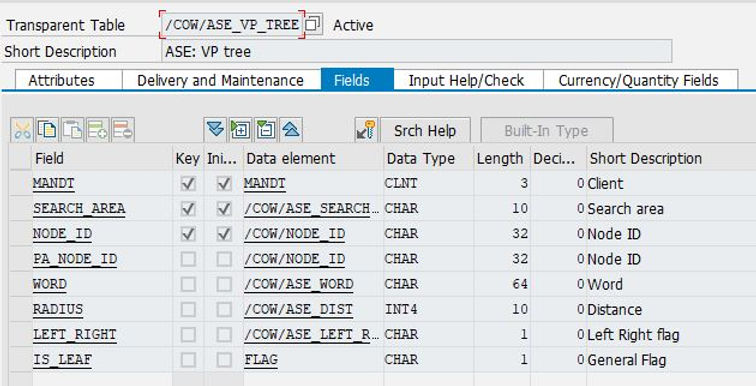

Teil 1: Die Levenshtein-Distanz
Datenbankselects zu programmieren ist für ABAP-Entwickler eine alltägliche Aufgabe. Seien es Kundenerweiterungen, seien es Reports: Fast bei jeder Entwicklungsaufgabe sieht man sich mit Datenbankabfragen konfrontiert. Für manche Entwickler ist die sogenannte Reportentwicklung gar der Hauptbestandteil ihrer Tätigkeit. Diese Art von Datenbankabfragen zeichnen sich dadurch aus, dass es zu jedem select-Statement ein wohldefiniertes, eindeutiges Ergebnis gibt.
Beispiel: Der Benutzer möchte zu einem Vertriebsbeleg, dessen Nummer er kennt und von dem er weiß, dass er existiert, das Erstellungsdatum ermitteln. Der Entwickler wird dafür folgendes select-Statement erstellen:
select erdat from vbak into lv_erdat where vbeln = p_vbeln.p_vbeln stellt dabei die Benutzereingabe dar. Wenn die Anwendung keinen Fehler enthält, kann der Benutzer für diese Abfrage genau ein Ergebnis erwarten. Würde die Abfrage kein Ergebnis liefern, so hieße das, dass entweder der Beleg (noch) nicht existiert, d.h. der Benutzer hat sich geirrt, oder dass die Belegdaten inkonsistent wären, d.h. ein Fehler in der Anwendung vorläge.
Anders stellt sich die Situation dar, wenn man es statt mit SAP-Belegen mit Textdokumenten zu tun hat. Textdokumente können entweder im SAP-System entstehen oder von außen in das System eingebracht werden. Man wird eher selten eine Volltextsuche auf Textdokumente ausführen, die im SAP-System entstanden sind, denn es handelt sich ja um Daten, die man auch direkt über Datenbankabfragen ermitteln kann. Dokumente, die von außen in das System kommen unterscheiden sich in einem Punkt fundamental von denen, die aus Systemdaten erstellt wurden: Diese Dokumente enthalten statistische Fehler.
Beispiel: Ein Lieferant sendet per Post eine Rechnung. Die Rechnung wird beim Empfänger eingescannt und in einem Filesystemordner abgelegt, um später durch einen OCR-Server weiterverarbeitet zu werden. OCR-Algorithmen arbeiten häufig mit neuronalen Netzen und liefern Ergebnisse, die mit einem zufälligen Fehler behaftet sind. In den Ergebnisdateien des OCR-Servers kann man nach Wörtern oder mehreren Wörtern suchen. Im Unterschied zur Datenbanksuche liefert diese Suche kein wohldefiniertes Ergebnis. Schickt der Lieferant etwa eine Rechnung mit der Artikelnummer 12345, so kann es sein, dass der OCR-Algorithmus 12349 erkennt. Sucht man nun nach 12345, so würde eine Gleichheitsprüfung der Strings fehlschlagen und die Suche würde kein Ergebnis liefern. Dennoch würde der Benutzer ein Ergebnis erwarten.
Das bedeutet, dass man ein Maß für Ähnlichkeit von Wörtern - oder allgemeiner Strings - benötigt. Bekannt sind der Hamming-Abstand und die Levenshtein-Distanz oder auch Edit-Distanz. Der Hamming-Abstand zählt im wesentlichen die Anzahl der verschiedenen Zeichen in der Wörtern. Die Levenshtein-Distanz zählt die minimale Anzahl von Edit-Operationen, die nötig sind, um das eine Wort in das andere zu überführen. Dabei sind die Edit-Operationen
Die Levenshtein-Distanz hat die Eigenschaften einer Metrik, erfüllt also insbesondere die Dreiecksungleichung. Dass die Dreiecksungleichung erfüllt ist, folgt direkt aus der Minimalität der Levenshtein-Distanz.
Der Levenshtein Algorithmus wird häufig implementiert mit Hilfe sogenannter dynamischer Programmierung. Dazu ordnet man die zu vergleichenden Wörter in einem Tableau an wie im folgenden dargestellt:

Die zweite Zeile liest man folgendermaßen: Um ein leeres Wort in "j" abzubilden, benötigt man eine Operation, nämlich das Einfügen von "j". Um ein leeres Wort in "ju" abzubilden, benötigt man 2 Operation, nämlich Einfügen von "j" und Einfügen von "u" usw.
Betrachten wir das 5-5-Element der Matrix. Das 5-5-Element der Matrix hat den Wert 1, weil das Zeichen "l" durch "n" ersetzt werden muss. Allgemein kommt das Element (i,j) zustande als
min{Element(i-1,j-1)+1, Element(i,j-1)+1,Element(i-1,j)+1}, falls die Zeichen verschieden sind
und
Element(i-1,j-1), falls die Zeichen gleich sind.
Verfügt man über eine ABAP-Implementierung von M x N Matrizen, so lässt der Levenshtein-Algorithmus einfach in ABAP implementieren.
Hier eine Beispielimplementierung:
METHOD calc_levenshtein_dist.
DATA: lo_matrix TYPE REF TO /cow/cl_ase_matrix_int,
lo_vektor_s1 TYPE REF TO /cow/cl_ase_matrix_char1,
lo_vektor_s2 TYPE REF TO /cow/cl_ase_matrix_char1,
m TYPE int4,
n TYPE int4,
k TYPE int4,
l TYPE int4,
a TYPE int4,
b TYPE int4,
r TYPE int4,
s TYPE int4,
r_ TYPE int4,
s_ TYPE int4,
o TYPE int4,
p TYPE int4,
c TYPE c,
lv_value TYPE int4,
lv_value_0_0 TYPE int4,
lv_value_1_0 TYPE int4,
lv_value_0_1 TYPE int4,
lv_costs TYPE int4,
lv_prefixlen TYPE int4.
o = STRLEN( iv_s1 ).
p = STRLEN( iv_s2 ).
m = o + 1.
n = p + 1.
* Create matrix
CREATE OBJECT lo_matrix
EXPORTING
iv_m = m
iv_n = n.
* Fill first column
DO m TIMES.
k = sy-index.
l = k - 1.
lo_matrix->set_i_j( iv_i = k
iv_j = 1
iv_value = l ).
ENDDO.
* Fill first row
DO n TIMES.
k = sy-index.
l = k - 1.
lo_matrix->set_i_j( iv_i = 1
iv_j = k
iv_value = l ).
ENDDO.
* Create the word s1 vector
CREATE OBJECT lo_vektor_s1
EXPORTING
iv_m = m
iv_n = 1.
* Set space
lo_vektor_s1->set_i_j( iv_i = 1
iv_j = 1
iv_value = space ).
* Fill the vector
DO o TIMES.
k = sy-index.
l = k - 1.
c = iv_s1+l(1).
k = k + 1.
lo_vektor_s1->set_i_j( iv_i = k
iv_j = 1
iv_value = c ).
ENDDO.
* Create the word s2 vector
CREATE OBJECT lo_vektor_s2
EXPORTING
iv_m = 1
iv_n = n.
* Set space on first pos
lo_vektor_s2->set_i_j( iv_i = 1
iv_j = 1
iv_value = space ).
* Fill the vector
DO p TIMES.
k = sy-index.
l = k - 1.
c = iv_s2+l(1).
k = k + 1.
lo_vektor_s2->set_i_j( iv_i = 1
iv_j = k
iv_value = c ).
ENDDO.
* Fill the rows
DO o TIMES.
r = sy-index.
r_ = sy-index + 1.
DO p TIMES.
s = sy-index.
s_ = sy-index + 1.
IF lo_vektor_s1->get_i_j( iv_i = r_ iv_j = 1 ) NE lo_vektor_s2->get_i_j( iv_i = 1 iv_j = s_ ).
lv_value_0_0 = lo_matrix->get_i_j( iv_i = r iv_j = s ).
lv_value_1_0 = lo_matrix->get_i_j( iv_i = r_ iv_j = s ).
lv_value_0_1 = lo_matrix->get_i_j( iv_i = r iv_j = s_ ).
lv_value = /cow/cl_ase_util=>min_3( iv_1 = lv_value_0_0
iv_2 = lv_value_1_0
iv_3 = lv_value_0_1 ) + 1.
lo_matrix->set_i_j( iv_i = r_ iv_j = s_ iv_value = lv_value ).
ELSE.
lv_value = lo_matrix->get_i_j( iv_i = r iv_j = s ).
lo_matrix->set_i_j( iv_i = r_ iv_j = s_ iv_value = lv_value ).
ENDIF.
ENDDO.
rv_ = lo_matrix->get_i_j( iv_i = m iv_j = n ).
ENDMETHOD.Wer diese Implementierung verwenden möchte, muss lediglich die Matrixklassen durch eigene ersetzen. Die Matrizen werden nur zum Speichern der Werte verwendet. D.h. es ist keine Implementierung von Matrixmultiplikationen o.ä. nötig.
Man mache sich klar, dass der Algorithmus eine Laufzeit der Größenordnung O(m*n) hat, wenn die zwei Wörter n bzw. m Zeichen enthalten.
Damit haben wir den ersten Schritt für die Implementierung einer Volltextsuche in ABAP getan. Wir können die Ähnlichkeit von zwei Wörtern messen. Im zweiten Teil dieses Blogbeitrags werden wir untersuchen, welche Datenbankstrukturen nötig sind, um Wörter und Dokumente zu speichern und wie man performant auf diesen Strukturen suchen kann, obwohl der Levenshtein-Algorithmus eine Laufzeit von O(m*n) hat.
Teil 2: Erzeugen des VP-Trees
Um etwa schnelle Volltextsuchen auf eingescannten Dokumenten zu ermöglichen, müssen die Dokumente indiziert werden. D.h. wir speichern alle Wörter der Dokumente in einer DB-Tabelle, der Wörterbuchtabelle und die Dokumente selbst z.B. in einem Archiv. Die Beziehung Wort ↔ Dokument ID speichern wir in einer eigenen DB-Tabelle, der Wort↔Dokumentmatrix.
Wörterbuchtabelle:

Wort↔Dokumentmatrix:

Der Prozess des Dokumentindizierens ist simpel. Für jedes eingescannte Dokument, das den OCR Prozess durchlaufen hat, wird das Dokument im Archiv abgelegt. Dann werden die extrahierten Wörter (nach translate to upper case) im Wörterbucg gespeichert und die Relationen Wort↔Dokument in der Wort↔Dokumentmatrix. Eine ähnliche Vorgehensweise funktioniert auch für Inhalte von Datenbanktabellen. In unserem Umfeld hat es immer eine spezielle Bedeutung, wenn wir von "Prozess" reden. Ein Prozess ist jeweils ein Prozess im Sinne des Universal Process Tools oder einer Kette solcher Prozesse. Natürlich kann dieses Prinzip auch ohne Universal Process Tool angewendet werden.
Mit Hilfe der Levenshtein Distanz könnten nun bereits Ähnlichkeitssuchen auf dem Wörterbuch stattfinden. Über die Wort↔Dokumentmatrix können dann die zugehörigen Dokumente ermittelt werden. Leider ist der Wortvergleich per Edit-Distance sehr inperformant aus oben genannten Gründen. Man mache sich klar, dass bei einer Suche das gesuchte Wort zunächst mit allen Wörtern des Wörterbuchs verglichen werden muss. Daher ist es wünschenswert, das Wörterbuch möglichst klein zu halten. Dafür gibt es verschiedene Verfahren, etwa alle Stop Words eliminieren, nur Großschreibung verwenden, auf den Wortstamm reduzieren (keine gebeugten Wörter) usw. Darauf gehen wir nicht weiter ein. All diese Verfahren reichen dennoch nicht aus, generisch eine performante Suche sicherzustellen.
Um eine performante Suche zu erreichen, indizieren wir die Wörter im Wörterbuch durch einen sogenannten VP-Tree (Vantage Point Tree). Die Idee des VP-Trees besteht darin, eine Teilmenge eines metrischen Raums so zu partitionieren, dass man meistens entweder nur innerhalb eines metrischen Balls um einen gegebenen Punkt (vantage point) suchen muss oder nur außerhalb. Sind die Punkte innerhalb des Balles und außerhalb des Balles etwa gleich verteilt, erreicht man so annähernd eine binäre Suche, deren Kosten log(n) sind im Gegensatz zu n bei der linearen Suche. In unserem Fall ist die Metrik d(wort1, wort2) := levenshtein_dist(wort1,wort2). Der VP-Tree wird dann folgendermaßen aufgebaut:
1. Wir suchen zufällig ein Wort w1 aus dem Wörterbuch aus und berechnen d(w1,w) für alle w im Wörterbuch ungleich w1. Wir wählen einen Radius r, so dass etwa die Hälfte aller Wörter w im Ball mit Radius r um w1 liegt, und damit die andere Hälfte außerhalb des Balles liegt (Medianradius). Alle Wörter, die innerhalb des Balles liegen, werden zukünftig im linken Zweig unter dem ersten VP liegen, während die anderen im rechten Zweig unter dem ersten VP liegen. Die nächsten zwei VPs (den rechten und den linken) erhalten wir, indem wir das Verfahren auf die beiden disjunkten Teilmengen anwenden, d.h. wir suchen jeweils VPs für alle Punkte im Ball um den ersten VP und für alle Punkte außerhalb des Balles um den ersten VP. Dieses Verfahren interieren wir, bis keine Punkte mehr übrig sind. Das Ergebnis speichern wir in unserer VP-Tabelle.
VP-Tree Tabelle:

Im folgenden das komplette Listing der Vantage Tree Builder Klasse:
class /COW/CL_ASE_VP_TREE_BUILDER definition
public
final
create public .
*"* public components of class /COW/CL_ASE_VP_TREE_BUILDER
*"* do not include other source files here!!!
public section.
methods BUILD
raising
/COW/CX_ROOT .
methods CONSTRUCTOR
importing
!IV_SEARCH_AREA type /COW/ASE_SEARCH_AREA .
methods CREATE_NODE
importing
!IV_PA_NODE_ID type /COW/NODE_ID
!IV_LEFT_RIGHT type /COW/ASE_LEFT_RIGHT_FLAG
changing
!CT_WORDS type /COW/ASE_T_WORD_S
raising
/COW/CX_ROOT .
class-methods STATIC_NODE_ID_CREATE
returning
value(RV_) type CHAR32 .
protected section.
*"* protected components of class /COW/CL_ASE_VP_TREE_BUILDER
*"* do not include other source files here!!!
private section.
*"* private components of class /COW/CL_ASE_VP_TREE_BUILDER
*"* do not include other source files here!!!
data MV_SEARCH_AREA type /COW/ASE_SEARCH_AREA .
data MT_WORDS type /COW/ASE_T_WORD_S .
methods RESET .
methods CREATE_ROOT_NODE
raising
/COW/CX_ROOT .
class-methods DIST_LIST_CALC_MEAN
importing
!IT_DIST type /COW/ASE_T_DISTANCE
returning
value(RV_) type /COW/ASE_RATIONAL .
class-methods DIST_LIST_CALC_VARIANCE
importing
!IT_DIST type /COW/ASE_T_DISTANCE
returning
value(RV_) type /COW/ASE_RATIONAL .
methods WORD_CALC_VARIANCE
importing
!IV_WORD type STRING
!IT_WORDS type /COW/ASE_T_WORD_S
returning
value(RV_) type /COW/ASE_RATIONAL
raising
/COW/CX_ROOT .
methods GET_RANDOM_WORD
importing
!IT_WORDS type /COW/ASE_T_WORD_S
returning
value(RV_) type /COW/ASE_WORD .
methods GET_VARIANT_WORD
importing
!IT_WORDS type /COW/ASE_T_WORD_S
returning
value(RV_) type /COW/ASE_WORD .
ENDCLASS.
CLASS /COW/CL_ASE_VP_TREE_BUILDER IMPLEMENTATION.
METHOD build.
me->reset( ).
me->create_root_node( ).
ENDMETHOD.
METHOD constructor.
mv_search_area = iv_search_area.
ENDMETHOD.
METHOD create_node.
DATA: lv_word_s TYPE string,
lv_word_s1 TYPE string,
lv_word_s2 TYPE string,
lv_word_s3 TYPE string,
lv_median TYPE int4,
lv_median_low TYPE int4,
lv_median_up TYPE int4,
lv_median_opt TYPE int4,
ls_node TYPE /cow/ase_vp_tree,
lv_len TYPE int4,
lv_from TYPE int4,
lt_words_left TYPE /cow/ase_t_word_s,
lt_words_right TYPE /cow/ase_t_word_s,
lv_dist TYPE int4,
lv_tabix TYPE sy-tabix,
lv_var1 TYPE /cow/ase_rational,
lv_var2 TYPE /cow/ase_rational,
lv_var3 TYPE /cow/ase_rational,
lv_var TYPE /cow/ase_rational,
lv_median_dist_up TYPE int4,
lv_median_dist_low TYPE int4,
lv_string TYPE string.
FIELD-SYMBOLS: <ls_word> TYPE /cow/ase_s_word_s.
lv_word_s = me->get_random_word( ct_words ).
* lv_word_s2 = me->get_random_word( ct_words ).
* lv_word_s3 = me->get_random_word( ct_words ).*
* lv_var1 = me->word_calc_variance( iv_word = lv_word_s1 it_words = ct_words ).
* lv_var2 = me->word_calc_variance( iv_word = lv_word_s2 it_words = ct_words ).
* lv_var3 = me->word_calc_variance( iv_word = lv_word_s3 it_words = ct_words ).*
* lv_var = /cow/cl_ase_util=>max_3_rational( iv_1 = lv_var1 iv_2 = lv_var2 iv_3 = lv_var3 ).*
* CASE lv_var.
* WHEN lv_var1.
* lv_word_s = lv_word_s1.
* WHEN lv_var2.
* lv_word_s = lv_word_s2.
* WHEN lv_var3.
* lv_word_s = lv_word_s3.
* ENDCASE.*
* lv_word_s = me->get_variant_word( ct_words ).
IF lv_word_s IS INITIAL.
RETURN.
ENDIF.
* Calc distance for all words in set
LOOP AT ct_words ASSIGNING <ls_word>.
lv_string = <ls_word>-word.
<ls_word>-radius = /cow/cl_ase_util=>calc_levenshtein_dist( iv_s1 = lv_word_s iv_s2 = lv_string ).
ENDLOOP.
* Sort
SORT ct_words BY radius ASCENDING.
* Get length
lv_len = LINES( ct_words ).
lv_median = lv_len / 2.
READ TABLE ct_words INDEX lv_median ASSIGNING <ls_word>.
IF sy-subrc NE 0.
* ToDo
ENDIF.
lv_dist = <ls_word>-radius.
* Get first with this distance
LOOP AT ct_words ASSIGNING <ls_word> TO lv_median.
lv_tabix = sy-tabix.
IF <ls_word>-radius = lv_dist.EXIT.
ENDIF.
ENDLOOP.
lv_median_low = lv_tabix - 1.
* Get last with this distance
LOOP AT ct_words ASSIGNING <ls_word> FROM lv_median.
lv_tabix = sy-tabix.
IF <ls_word>-radius > lv_dist.EXIT.
ENDIF.
ENDLOOP.
lv_median_up = lv_tabix - 1.
lv_median_dist_up = lv_median_up - lv_median.
lv_median_dist_low = lv_median - lv_median_low.
IF lv_median_dist_up < lv_median_dist_low.
lv_median_opt = lv_median_up.
ELSE.
lv_median_opt = lv_median_low.
ENDIF.
* Get the word
READ TABLE ct_words INDEX lv_median_opt ASSIGNING <ls_word>.
lv_dist = <ls_word>-radius.
* Add node
ls_node-search_area = mv_search_area.
ls_node-node_id = static_node_id_create( ).
ls_node-pa_node_id = iv_pa_node_id.
ls_node-word = lv_word_s.
ls_node-radius = lv_dist.
ls_node-left_right = iv_left_right.
IF LINES( ct_words ) = 1.
ls_node-is_leaf = abap_true.
ENDIF.
* Remove the center point
DELETE ct_words INDEX 1.
* Update index
MODIFY /cow/ase_vp_tree FROM ls_node.COMMIT WORK.
lv_median_opt = lv_median_opt - 1.
IF lv_median_opt > 0.
* Split set
LOOP AT ct_words ASSIGNING <ls_word> FROM 1 TO lv_median_opt.
APPEND <ls_word> TO lt_words_left.
ENDLOOP.
ENDIF.
lv_from = lv_median_opt + 1.
IF LINES( ct_words ) GE lv_from.
LOOP AT ct_words ASSIGNING <ls_word> FROM lv_from.
APPEND <ls_word> TO lt_words_right.
ENDLOOP.
ENDIF.CLEAR ct_words.
DATA: lo_left TYPE REF TO /cow/cl_ase_vp_tree_builder,
lo_right TYPE REF TO /cow/cl_ase_vp_tree_builder.
IF LINES( lt_words_left ) > 0.
me->create_node( EXPORTING iv_pa_node_id = ls_node-node_id
iv_left_right = 'L'
CHANGING ct_words = lt_words_left ).
ENDIF.
IF LINES( lt_words_right ) > 0.
me->create_node( EXPORTING iv_pa_node_id = ls_node-node_id
iv_left_right = 'R'
CHANGING ct_words = lt_words_right ).
ENDIF.
ENDMETHOD.
METHOD create_root_node.
SELECT word length FROM /cow/ase_words INTO CORRESPONDING FIELDS OF TABLE mt_words
WHERE search_area = mv_search_area.
SORT mt_words BY word.
DELETE ADJACENT DUPLICATES FROM mt_words.
me->create_node( EXPORTING iv_pa_node_id = space
iv_left_right = 'C'
CHANGING ct_words = mt_words ).
ENDMETHOD.
METHOD dist_list_calc_mean.
DATA: lv_lines TYPE int4,
lv_dist TYPE int4.
FIELD-SYMBOLS: <lv_dist> TYPE int4.
lv_lines = LINES( it_dist ).
IF lv_lines = 0.
RETURN.
ENDIF.
LOOP AT it_dist ASSIGNING <lv_dist>.
lv_dist = lv_dist + <lv_dist>.
ENDLOOP.
rv_ = lv_dist / lv_lines.
ENDMETHOD.
METHOD dist_list_calc_variance.
DATA: lv_lines TYPE int4,
lv_dist TYPE int4,
lv_var TYPE int4.
DATA: lv_mean TYPE /cow/ase_rational.
FIELD-SYMBOLS: <lv_dist> TYPE int4.
lv_lines = LINES( it_dist ).
IF lv_lines = 0.
RETURN.
ENDIF.
lv_mean = /cow/cl_ase_vp_tree_builder=>dist_list_calc_mean( it_dist ).
LOOP AT it_dist ASSIGNING <lv_dist>.
lv_var = lv_var + ( <lv_dist> - lv_mean ) * ( <lv_dist> - lv_mean ).
ENDLOOP.
rv_ = lv_var / lv_lines.
ENDMETHOD.
METHOD get_random_word.
DATA: lv_lines TYPE int4,
lv_seed TYPE int4,
lo_random TYPE REF TO cl_abap_random,
lv_random TYPE int4.
FIELD-SYMBOLS: <ls_words> TYPE /cow/ase_s_word_s.
lv_lines = LINES( it_words ).
IF lv_lines < 1.
RETURN.
ENDIF.
lv_seed = cl_abap_random=>seed( ).
lo_random = cl_abap_random=>create( lv_seed ).
lv_random = lo_random->intinrange( low = 1 high = lv_lines ).
READ TABLE it_words INDEX lv_random ASSIGNING <ls_words>.
IF sy-subrc NE 0.
* ToDo
ENDIF.
rv_ = <ls_words>-word.
ENDMETHOD.
METHOD get_variant_word.
DATA: lv_lines TYPE int4,
lv_len TYPE int4,lt_words LIKE it_words,
lv_median TYPE int4.
FIELD-SYMBOLS: <ls_words> TYPE /cow/ase_s_word_s.
lt_words = it_words.
lv_lines = LINES( it_words ).
SORT lt_words BY length ASCENDING.
lv_median = lv_lines / 2.
IF lv_median = 0.
lv_median = 1.
ENDIF.
READ TABLE lt_words INDEX lv_median ASSIGNING <ls_words>.
rv_ = <ls_words>-word.
ENDMETHOD.
METHOD reset.
DELETE FROM /cow/ase_vp_tree WHERE search_area = mv_search_area.
ENDMETHOD.
METHOD static_node_id_create.CALL FUNCTION 'GUID_CREATE'
IMPORTING
ev_guid_32 = rv_.
ENDMETHOD.
METHOD word_calc_variance.
DATA: lt_dist TYPE /cow/ase_t_distance,
lv_dist TYPE int4,
lv_word_s TYPE string,
lv_string TYPE string.
FIELD-SYMBOLS: <ls_word> TYPE /cow/ase_s_word_s.
LOOP AT it_words ASSIGNING <ls_word>.
lv_word_s = iv_word.
lv_string = <ls_word>-word.
lv_dist = /cow/cl_ase_util=>calc_levenshtein_dist( iv_s1 = lv_word_s iv_s2 = lv_string ).
APPEND lv_dist TO lt_dist.
ENDLOOP.
rv_ = /cow/cl_ase_vp_tree_builder=>dist_list_calc_variance( lt_dist ).
ENDMETHOD.
ENDCLASS.Um den VP Tree aufzubauen, wird die Klasse in einem Programm folgendermaßen verwendet:
REPORT /cow/ase_vp_tree_builder.
DATA: lo_vp TYPE REF TO /cow/cl_ase_vp_tree_builder.
PARAMETERS: sa TYPE /cow/ase_search_area DEFAULT 'DEFAULT'.
CREATE OBJECT lo_vp
EXPORTING
iv_search_area = sa.
lo_vp->build( ).Ändert sich das Wörterbuch, muss stets der gesamte VP-Tree neu gebildet werden. Es ist klar nach dem bereits Gesagten, dass der Aufbau des VP-Trees eine zeitaufwendige Angelegenheit ist. D.h. auch wenn Dokumente bereits indiziert sind, sind sie nicht sofort in der Suche auffindbar. Zuerst muß der VP-Tree mit den neuen Indexdaten aufgebaut werden. Der Update-Algorithmus muss als noch offener Punkt betrachtet werden.
Wir weisen darauf hin, dass die oben angezeigte Implementierung nur ein erster Ansatz ist, um einen Eindruck zu vermitteln von der Funktionsweise eines VP-Trees. Sicherlich gibt es noch viel Optimierungspotential. Außerdem gibt es bereits verfeinerte VP-Tree-Verfahren, die der geneigte Leser leicht bei einer Internetrecherche finden kann. Insbesondere das Auffinden eines "guten" Vantage Points ist Gegenstand vieler Untersuchungen. Häufig wird vorgeschlagen, einen Punkt zu wählen, dessen Abstands-Varianz maximal ist unter einer Teilmenge zufällig gewählter Punkte.
Teil 3: Suchen im VP-Tree
Die Suche im VP-Tree vergleicht iterativ den Abstand des Suchwortes mit dem Knotenwort. Dabei liegt das Suchwort entweder im Knotenkreis um das Knotenwort oder außerhalb dieses Kreises. Liegt das Suchwort weit "genug" im Kreis oder weit genug außerhalb des Kreises, so genügt es entweder nur den linken oder nur den rechten Zweig des Suchbaumes zu durchsuchen. Dadurch reduziert sich die Anzahl der nötigen Abstandsberechnungen drastisch. Im Idealfall entsteht eine binäre Suche, deren Kosten bekanntermaßen log(n) sind. Hier die Implementierung im ABAP:
CLASS vpt_searcher DEFINITION.
PUBLIC SECTION.
DATA: mv_sa TYPE /cow/ase_search_area,
mt_result TYPE /cow/ase_t_vp_search_result,
mv_tau TYPE int4 VALUE 99999.METHODS:
constructor
IMPORTING
iv_sa TYPE /cow/ase_search_area,execute
IMPORTING iv_word TYPE /cow/ase_wordRAISING /cow/cx_root.
PROTECTED SECTION.
METHODS:
vpt_get_root_node
RETURNING value(rs_) TYPE /cow/ase_vp_tree,next
IMPORTING
iv_word TYPE string
is_node TYPE /cow/ase_vp_tree
iv_dist TYPE int4RAISING /cow/cx_root,
node_get_right_child
IMPORTING
iv_node_id TYPE /cow/node_id
RETURNING value(rs_) TYPE /cow/ase_vp_tree,node_get_left_child
IMPORTING
iv_node_id TYPE /cow/node_id
RETURNING value(rs_) TYPE /cow/ase_vp_tree,determine_tau,
check_exit
RETURNING value(rv_) TYPE flag.
ENDCLASS. "vpt_searcher DEFINITION
CLASS vpt_searcher IMPLEMENTATION.
METHOD constructor.
mv_sa = iv_sa.
ENDMETHOD. "constructor
METHOD execute.
DATA: lv_search_string TYPE string,
lv_word TYPE string,
ls_root TYPE /cow/ase_vp_tree,ls_result LIKE LINE OF mt_result.
lv_search_string = iv_word.
* Get root node
ls_root = me->vpt_get_root_node( ).
* Store rootMOVE-CORRESPONDING ls_root TO ls_result.
lv_word = ls_root-word.
* Calc distance
ls_result-dist = /cow/cl_ase_util=>calc_levenshtein_dist( iv_s1 = lv_search_string iv_s2 = lv_word ).
* Calc score
ls_result-score = /cow/cl_ase_search_ui_co=>calc_levenshtein_score( iv_search_string = lv_search_string
iv_dist = ls_result-dist
iv_word = lv_word ).
APPEND ls_result TO mt_result.
* Call next
me->next( iv_word = lv_search_string is_node = ls_root iv_dist = ls_result-dist ).
ENDMETHOD. "execute
METHOD vpt_get_root_node.
SELECT SINGLE * FROM /cow/ase_vp_tree INTO rs_
WHERE search_area = mv_sa AND
pa_node_id = space.
ENDMETHOD. "vpt_get_root_node
METHOD next.
IF me->check_exit( ) = abap_true.
RETURN.
ENDIF.
DATA: lv_dist TYPE int4,
lv_dist_sphere TYPE int4,ls_result LIKE LINE OF mt_result,
lv_word TYPE string,
lv_word_l TYPE string,
lv_word_r TYPE string,
ls_child_l TYPE /cow/ase_vp_tree,
ls_child_r TYPE /cow/ase_vp_tree,
lv_search_left_and_right TYPE flag.
* Calc distance of words
lv_word = is_node-word.
lv_dist = iv_dist.
* 1. Case: word is in ball (closed ball)
IF lv_dist LE is_node-radius.
* Calc distance to sphere
lv_dist_sphere = is_node-radius - lv_dist.
IF lv_dist_sphere GE mv_tau.
* Search only in left branch
ls_child_l = me->node_get_left_child( is_node-node_id ).
IF ls_child_l IS NOT INITIAL.MOVE-CORRESPONDING ls_child_l TO ls_result.
lv_word_l = ls_child_l-word.
ls_result-dist = /cow/cl_ase_util=>calc_levenshtein_dist( iv_s1 = iv_word iv_s2 = lv_word_l ).
* Calc score
ls_result-score = /cow/cl_ase_search_ui_co=>calc_levenshtein_score( iv_search_string = iv_word
iv_dist = ls_result-dist
iv_word = lv_word_l ).
* Is leaf
ls_result-is_leaf = ls_child_l-is_leaf.INSERT ls_result INTO TABLE mt_result.
* Determine tau
me->determine_tau( ).
* Call next
me->next( iv_word = iv_word is_node = ls_child_l iv_dist = ls_result-dist ).
ENDIF.
ELSE.
lv_search_left_and_right = abap_true.
ENDIF.
* 2. Case: word is not in closed ball; search in right branch
ELSE.
* Calc distance to left sphere
lv_dist_sphere = lv_dist - is_node-radius.
IF lv_dist_sphere GT mv_tau.
* Get right child
ls_child_r = me->node_get_right_child( is_node-node_id ).
IF ls_child_r IS NOT INITIAL.MOVE-CORRESPONDING ls_child_r TO ls_result.
lv_word_r = ls_child_r-word.
ls_result-dist = /cow/cl_ase_util=>calc_levenshtein_dist( iv_s1 = iv_word iv_s2 = lv_word_r ).
* Calc score
ls_result-score = /cow/cl_ase_search_ui_co=>calc_levenshtein_score( iv_search_string = iv_word
iv_dist = ls_result-dist
iv_word = lv_word_r ).
* Is leaf
ls_result-is_leaf = ls_child_r-is_leaf.INSERT ls_result INTO TABLE mt_result.
* Determine tau
me->determine_tau( ).
* Call next
me->next( iv_word = iv_word is_node = ls_child_r iv_dist = ls_result-dist ).
ENDIF.
ELSE.
lv_search_left_and_right = abap_true.
ENDIF.
IF lv_search_left_and_right = abap_true.
* Search both in left and right
ls_child_l = me->node_get_left_child( is_node-node_id ).
IF ls_child_l IS NOT INITIAL.MOVE-CORRESPONDING ls_child_l TO ls_result.
lv_word_l = ls_child_l-word.
ls_result-dist = /cow/cl_ase_util=>calc_levenshtein_dist( iv_s1 = iv_word iv_s2 = lv_word_l ).
* Calc score
ls_result-score = /cow/cl_ase_search_ui_co=>calc_levenshtein_score( iv_search_string = iv_word
iv_dist = ls_result-dist
iv_word = lv_word_l ).
* Is leaf
ls_result-is_leaf = ls_child_l-is_leaf.INSERT ls_result INTO TABLE mt_result.
* Determine tau
me->determine_tau( ).
* Call next
me->next( iv_word = iv_word is_node = ls_child_l iv_dist = ls_result-dist ).
ENDIF.
ls_child_r = me->node_get_right_child( is_node-node_id ).
IF ls_child_r IS NOT INITIAL.MOVE-CORRESPONDING ls_child_r TO ls_result.
lv_word_r = ls_child_r-word.
ls_result-dist = /cow/cl_ase_util=>calc_levenshtein_dist( iv_s1 = iv_word iv_s2 = lv_word_r ).
* Calc score
ls_result-score = /cow/cl_ase_search_ui_co=>calc_levenshtein_score( iv_search_string = iv_word
iv_dist = ls_result-dist
iv_word = lv_word_r ).
* Is leaf
ls_result-is_leaf = ls_child_r-is_leaf.INSERT ls_result INTO TABLE mt_result.
* Determine tau
me->determine_tau( ).
* Call next
me->next( iv_word = iv_word is_node = ls_child_r iv_dist = ls_result-dist ).
ENDIF.
ENDMETHOD. "next
METHOD node_get_right_child.
SELECT SINGLE * FROM /cow/ase_vp_tree INTO rs_
WHERE search_area = mv_sa AND
pa_node_id = iv_node_id AND left_right = 'R'.
ENDMETHOD. "node_get_right_child
METHOD node_get_left_child.
SELECT SINGLE * FROM /cow/ase_vp_tree INTO rs_
WHERE search_area = mv_sa AND
pa_node_id = iv_node_id AND left_right = 'L'.
ENDMETHOD. "node_get_left_child
METHOD determine_tau.
FIELD-SYMBOLS: <ls_result> TYPE /cow/ase_s_vp_search_result.
READ TABLE mt_result INDEX 1 ASSIGNING <ls_result>.
IF sy-subrc = 0.
mv_tau = <ls_result>-dist.
ELSE.
mv_tau = 99999.
ENDIF.
ENDMETHOD. "determine_tau
METHOD check_exit.
* DATA: lv_lines TYPE int4.*
* FIELD-SYMBOLS: <ls_result> TYPE /cow/ase_s_vp_search_result.*
* lv_lines = LINES( mt_result ).*
* IF lv_lines LE 10.
* RETURN.
* ENDIF.*
* READ TABLE mt_result INDEX lv_lines ASSIGNING <ls_result>.
* IF sy-subrc = 0 AND <ls_result>-is_leaf = abap_true.
* rv_ = abap_true.
* RETURN.
* ELSE.
* rv_ = abap_false.
* ENDIF.
ENDMETHOD. "check_exit
ENDCLASS. "vpt_searcher IMPLEMENTATIONDie Suchklasse wird dann z.B. in folgender Weise verwendet:
DATA: lo_vpt_searcher TYPE REF TO vpt_searcher,
lt_result TYPE /cow/ase_t_vp_search_result.
FIELD-SYMBOLS: <ls_result> TYPE /cow/ase_s_vp_search_result.TRANSLATE lv_word TO UPPER CASE.
CREATE OBJECT lo_vpt_searcher
EXPORTING
iv_sa = iv_sa.
lo_vpt_searcher->execute( iv_word ).
lt_result = lo_vpt_searcher->mt_result.
LOOP AT lt_result ASSIGNING <ls_result>.
lv_word_string = <ls_result>-word.
lv_search_string_string = <ls_string>.
lv_score = me->calc_levenshtein_score( iv_search_string = lv_search_string_string
iv_word = lv_word_string
iv_dist = <ls_result>-dist ).
IF lv_score > '0.50'.
APPEND <ls_result> TO lt_words.
ENDIF.
ENDLOOP.